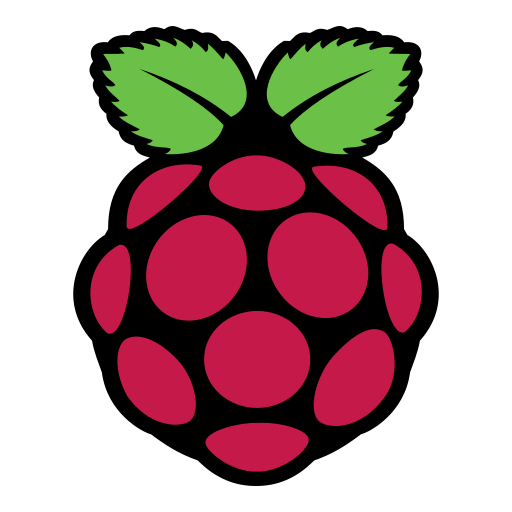
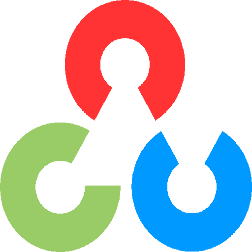

Cześć, tu Artur
Jestem
Zasoby
Ta strona zawiera linki do zasobów takich jak: Programowanie, WWW, Data Science, Badania naukowe i inne tematy związane głównie z IT 🌴
O mnie
Programista naukowy i nauczyciel IT
✅ Jestem nauczycielem i programistą z Polski, który skupia się na Technologiach Internetowych i Widzeniu Komputerowym. Angażuję się w projekty komercyjne i naukowe związane z tymi obszarami.
✅ Ta strona zawiera głównie materiały (linki do repozytoriów, tutoriali itp.), których używałem i nadal używam w tworzeniu oprogramowania.
✅ Prowadziłem również wykłady i laboratoria z „Przetwarzania obrazów", „Aplikacji webowych" i „Analizy danych".
✅ Byłem promotorem ponad 60 prac inżynierskich. Pracowałem również jako programista (Python, WWW, C++) w kilku firmach IT.
✅ Lubię grać w szachy, jeździć na rowerze, a także ogrodnictwo i spacery po lesie. Brałem udział w zawodach szachowych, biegowych i badmintonowych.
„Teraz jest lepsze niż nigdy" (fragment „Zen of Python")
Mój stack
Technologie i obszary poniżej to moje ulubione, ale nie jedyne, których używam ... 🎯

Python

RaspberryPi
Django
Linux
Docker

OpenCV
PostgreSQL
WWW
CV
Poprzez linki na dole tej strony możesz się ze mną skontaktować i sprawdzić moje profile IT oraz naukowe, aby zobaczyć moje zainteresowania i dowiedzieć się, nad czym aktualnie pracuję 🌻
Podsumowanie
Artur Zacniewski
Nauczyciel i programista z ponad 10-letnim doświadczeniem w nauczaniu przedmiotów informatycznych oraz ponad 5-letnim doświadczeniem komercyjnym w firmach IT.
- Trójmiasto, Polska
- WWW: www.scientificdev.net
Wykształcenie
Doktor nauk technicznych w dziedzinie informatyki
2008 - 2011
Politechnika Gdańska, Wydział Elektroniki, Telekomunikacji i Informatyki
Rozprawa doktorska pt. „Optymalizacja alokacji modułów programowych w rozproszonym wojskowym systemie szkoleniowym"; promotor: prof. Jerzy Balicki.
Magister inżynier „Elektroniki i telekomunikacji"
1998 - 2003
Wojskowa Akademia Techniczna w Warszawie
Praca magisterska pt. „Rozproszony system pomiarowy w Internecie"; Studia indywidualne w zakresie „Techniki cyfrowej i systemów mikroprocesorowych".
Doświadczenie zawodowe
Programista naukowy
2024 - ...
Akademia Marynarki Wojennej, Gdynia
- Opracowywanie i wdrażanie algorytmów związanych z wymaganiami projektu „SWAT-Shoal".
- Promotor prac inżynierskich z zakresu informatyki.
- Prowadzenie wykładów i laboratoriów z „Aplikacji kontenerowych".
Starszy inżynier oprogramowania
2023 - 2024
Adtran Networks, Gdynia
- Utrzymanie portalu dokumentacji z użyciem Python, Django, Docker, DevOps.
Programista Python/Django
2023
Atlasus, Zielona Góra
- Zadania z zakresu tworzenia oprogramowania (Python, Django, DRF, itp.).
- więcej na LinkedIn ...
Miejsce pracy
Moje aktualne miejsce pracy jest pokazane na mapie poniżej 👇